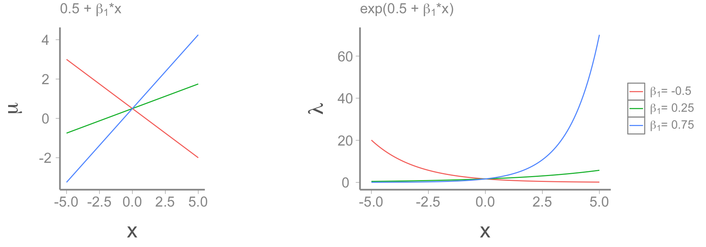
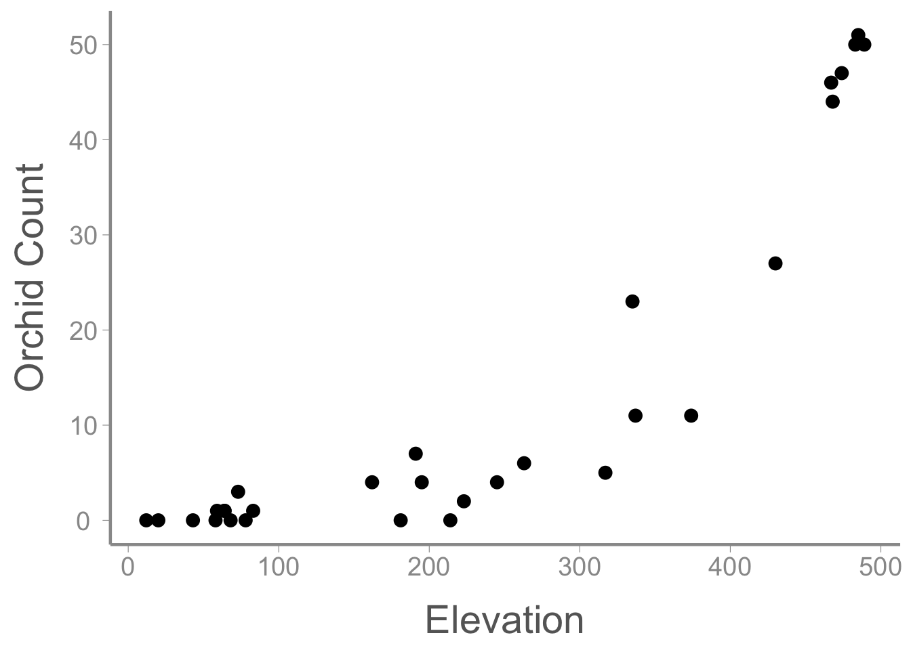
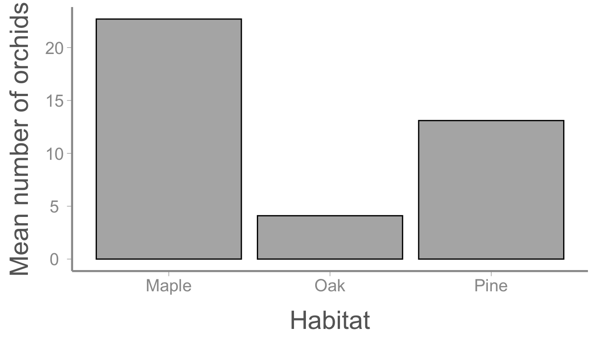
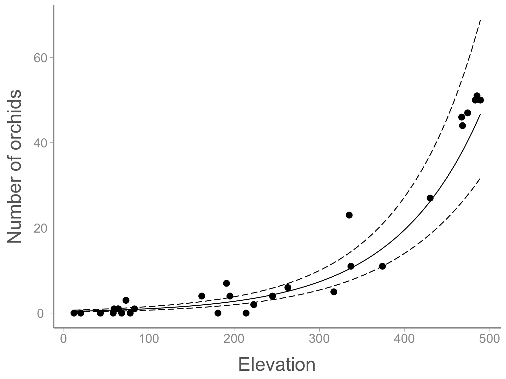
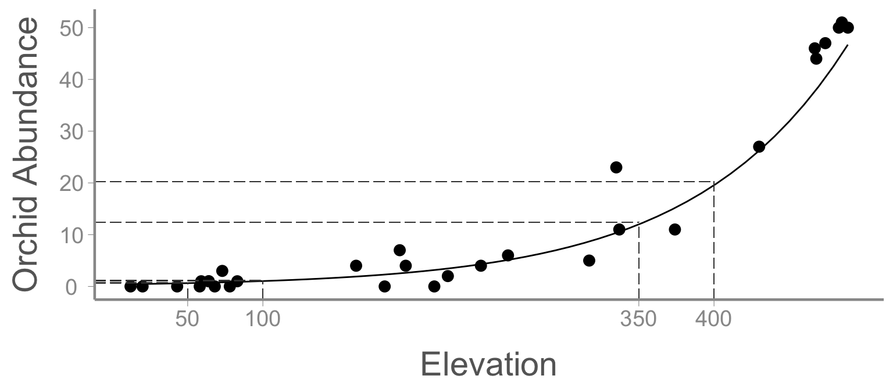

presence abundance elevation habitat
1 0 0 58 Oak
2 1 7 191 Oak
3 0 0 43 Oak
4 1 11 374 Oak
5 1 11 337 Oak
6 1 1 64 Oak
7 1 4 195 Oak
8 1 6 263 Oak
9 0 0 181 Oak
10 1 1 59 Oak
11 1 50 489 Maple
12 1 5 317 MapleLECTURE 21: poisson regression
FANR 6750
Fall 2026
Outline
1) Motivation
2) Model
3) Model fitting
4) Model interpretation
5) Over-dispersion
Poisson regression
Poisson regression is a specific type of GLM in which the response variable follows a Poisson distribution and the link function is the log
Poisson regression is used to model a positive, integer response variable as a function of explanatory variables
Examples:
Is the abundance of a focal species related to habitat type?
Is the number of foraging bouts a function of predator density?
Is flock size influenced by food availability?
Poisson regression
\[\large y_i \sim Poisson(\lambda_i)\]
\[\large log(\lambda_i) = \beta_0 + \beta_1x_{i1} + \beta_2x_{i2} + ...\]
where:
\(\large y_i\) is the response
\(\large \lambda_i\) is the expected value of the response variable for sample unit i
Log link
The log link allows us to transform the expected value \(\lambda_i\) (constrained to \(0\) to \(\infty\)) to the real scale ( \(-\infty\) to \(\infty\))
\[\large \log(2) = 0.693\]
The exponential allows us to transform the linear predictor to the positive scale
\[\large e^{0.693} = 2\]
Log link

Example
Imagine we are interested in the effects of elevation and habitat on the abundance a the rare orchid from last lecture
Raw data

Raw data

The glm function
| term | estimate | std.error | statistic | p.value |
|---|---|---|---|---|
| (Intercept) | -0.7870 | 0.2941 | -2.6756 | 0.0075 |
| habitatOak | -0.1534 | 0.1971 | -0.7782 | 0.4364 |
| habitatPine | -0.0653 | 0.1104 | -0.5914 | 0.5543 |
| elevation | 0.0098 | 0.0006 | 15.5507 | 0.0000 |
Intepreting parameters
| term | estimate | std.error | statistic | p.value |
|---|---|---|---|---|
| (Intercept) | -0.7870 | 0.2941 | -2.6756 | 0.0075 |
| habitatOak | -0.1534 | 0.1971 | -0.7782 | 0.4364 |
| habitatPine | -0.0653 | 0.1104 | -0.5914 | 0.5543 |
| elevation | 0.0098 | 0.0006 | 15.5507 | 0.0000 |
The expected number of orchids in maple-dominated forest at sea level = 0.46 (
exp(-0.787))The expected number of orchids in oak-dominated forest at sea level = 0.39 (
exp(-0.787 - 0.153))The expected number of orchids in pine-dominated forest at sea level = 0.43 (
exp(-0.787 - 0.065))
Intepreting parameters
| term | estimate | std.error | statistic | p.value |
|---|---|---|---|---|
| (Intercept) | -0.7870 | 0.2941 | -2.6756 | 0.0075 |
| habitatOak | -0.1534 | 0.1971 | -0.7782 | 0.4364 |
| habitatPine | -0.0653 | 0.1104 | -0.5914 | 0.5543 |
| elevation | 0.0098 | 0.0006 | 15.5507 | 0.0000 |
What about elevation?
Again, let’s visualize the fitted relationship
Example

Example
What’s the change in abundance at 1m vs 0m elevation (in oak habitat)?
exp(-0.786 + 0.009 * 1) - exp(-0.786 + 0.009 * 0)= 0.005
What’s the change in abundance at 101m vs 100m elevation ?
exp(-0.786 + 0.009 * 101) - exp(-0.786 + 0.009 * 100)= 0.012
Change in abundance is not linear

Example
Change in \(\lambda\) is not linear because exponential functions are multiplicative
Remember that \(e^{(a + b)} = e^a e^b\), so \(\lambda_i = exp(\beta_0 + \beta_1x_i) = exp(\beta_0)exp(\beta_1x_i)\)
\[\frac{\lambda_2}{\lambda_1}=\frac{exp(\beta_0)exp(\beta_1(x_1+1))}{exp(\beta_0)exp(\beta_1x_1)} = exp(\beta_1)\]
What is the change in abundance for one unit change in elevation?
- \(e^{\beta_{Elev}}\) =
exp(0.009)= 1.009 (about 1% increase per meter)
Over-dispersion
Over-dispersion
Poisson regression assumes that the mean ( \(E[y_i|x_i] = \lambda_i\)) is equal to the residual variance ( \(Var(y_i|x_i) = \lambda_i\))
This is assumption is often violated with real data. Specifically, the residual variance is often larger than the mean (\(Var(y_i|x_i) > E[y_i|x_i]\)). This is called over-dispersion
There are many possible reasons data will be over-dispersed:
Omission of important predictor variables
Measurement error in response and explanatory variables
Relationship between \(log(\lambda)\) and \(x\) may be non-linear
Data may contain outliers
Clustering (spatial, temporal, within-individual)
Response variable may be a mixture of random processes (e.g., is a site occupied? If occupied, how many individuals?)
Example
Suppose we are interested in how predator abundance influences foraging behavior of eastern chipmunks (Tamias striatus).
We place 100 chipmunks in individual enclosures with a small tray of food in the middle, letting each individual habituate to the enclosures before beginning the experiment.
We then randomly simulate one of 3 levels of aerial predator abundance (absent, low, high) using cardboard cutouts of raptor silhouettes.
While the predator silhouettes are in place, we record the number of times an individual visits the food tray within a 15-minute interval.

After 15-minutes, the silhouettes are removed and the individuals are allowed to re-habituate before another the predator treatment is randomly applied (why is this useful?).
Due to logistical contraints, not every individual was measured the same number of time (unbalanced)
Example
Example
Model fitting:
Call:
glm(formula = foraging ~ predator, family = "poisson", data = foragingdata)
Coefficients:
Estimate Std. Error z value Pr(>|z|)
(Intercept) 1.3001 0.0507 25.6 < 2e-16 ***
predatorLow -0.7448 0.0908 -8.2 2.4e-16 ***
predatorHigh -1.1788 0.1100 -10.7 < 2e-16 ***
---
Signif. codes: 0 '***' 0.001 '**' 0.01 '*' 0.05 '.' 0.1 ' ' 1
(Dispersion parameter for poisson family taken to be 1)
Null deviance: 709.36 on 299 degrees of freedom
Residual deviance: 553.57 on 297 degrees of freedom
AIC: 1193
Number of Fisher Scoring iterations: 5Over-dispersion
In general, over-dispersion will not bias parameter estimates but it will makes standard error’s too small (what happens to p-values?)
So one way to deal with over-dispersion is to adjust standard errors using a variance inflation factor:
\(E[y_i|x_i] = \lambda_i\)
\(Var[y_i|x_i] = \phi\lambda_i\)
Over-dispersion
Let’s compare the output of the two models:
# A tibble: 3 × 5
term estimate std.error statistic p.value
<chr> <dbl> <dbl> <dbl> <dbl>
1 (Intercept) 1.30 0.0507 25.6 5.09e-145
2 predatorLow -0.745 0.0908 -8.20 2.43e- 16
3 predatorHigh -1.18 0.110 -10.7 8.32e- 27Over-dispersion
Did the quasi-Poisson method fix the over-dispersion?
No! It only adjusted the SE
Over-dispersion
As mentioned, another reason for over-dispersion (and thus another way to address it) is the omission of important predictor variables
In this example, is there a predictor variable missing? How should this variable be treated in the model?
What does it mean to treat individual as a random effect in this model? What additional information does this model provide?
Over-dispersion
Generalized linear mixed model fit by maximum likelihood (Laplace
Approximation) [glmerMod]
Family: poisson ( log )
Formula: foraging ~ predator + (1 | individual)
Data: foragingdata
AIC BIC logLik -2*log(L) df.resid
1068.2 1083.0 -530.1 1060.2 296
Scaled residuals:
Min 1Q Median 3Q Max
-1.5209 -0.7969 -0.0868 0.4888 2.8575
Random effects:
Groups Name Variance Std.Dev.
individual (Intercept) 0.33 0.575
Number of obs: 300, groups: individual, 95
Fixed effects:
Estimate Std. Error z value Pr(>|z|)
(Intercept) 1.194 0.087 13.72 < 2e-16 ***
predatorLow -0.767 0.104 -7.39 1.4e-13 ***
predatorHigh -1.230 0.118 -10.40 < 2e-16 ***
---
Signif. codes: 0 '***' 0.001 '**' 0.01 '*' 0.05 '.' 0.1 ' ' 1
Correlation of Fixed Effects:
(Intr) prdtrL
predatorLow -0.430
predatorHgh -0.340 0.300Over-dispersion
Did that fix the over-dispersion?
Summary
Poisson regression is used when we want to model a count-based response as a function of explanatory variables
The response \(y_i\) is modeled as arising from a Poisson distribution with mean \(\lambda_i\) and the log link is used to map the linear predictor to the positive scale
All of the linear modeling concepts we have learned this semester (continuous/categorical explanatory variables, multiple regression, interactions, random effects) can be used within the Poisson regression framework
- Random effects can be included using the
glmerfunction in thelme4package
- Random effects can be included using the
Count data will often be over-dispersed, which can lead to biased standard error estimates
Over-dispersion can be addressed by using quasi-likelihood methods or adding additional covariates
In some cases, other modeling approaches may be necessary to address over-dispersion. We will cover these methods in more detail in the coming weeks
Looking ahead
Next time: